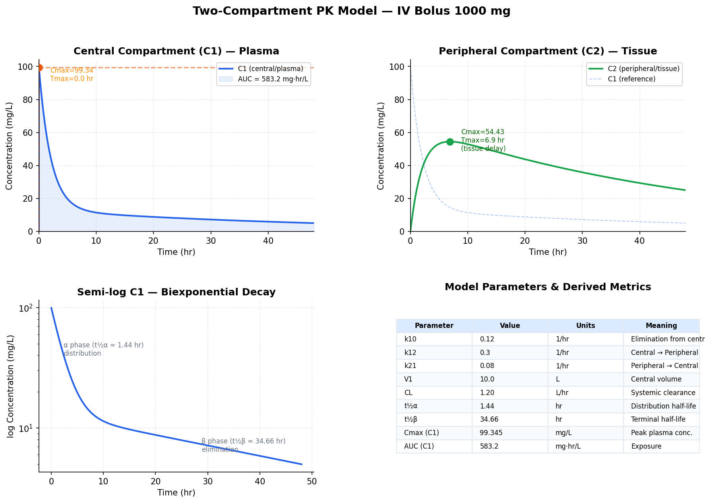
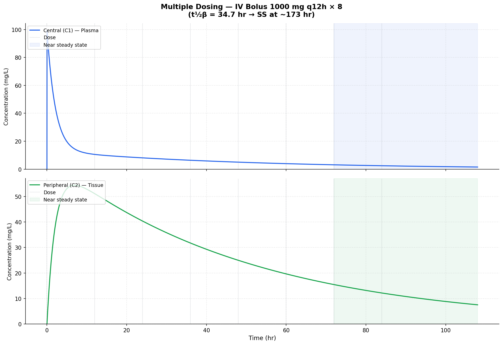
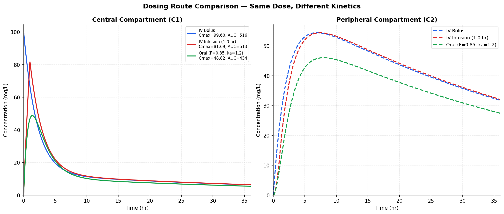

A Python simulator that integrates the two-compartment PK ODE system with SciPy to model
drug concentration over time across central (plasma) and peripheral (tissue) compartments.
It supports IV bolus, IV infusion, and oral dosing, and derives AUC, Cmax, Tmax, and half-life.
Every plot below is generated directly by the simulator.
PythonNumPySciPy · solve_ivpMatplotlib
These figures are the actual output of the model. Parameters were validated against published PK data for lidocaine, vancomycin, and acetaminophen. Click any chart to enlarge.
Generated Output
01
Single Dose: IV Bolus 1000 mg
The full single-dose profile: plasma (C1) and tissue (C2) concentration curves, the semi-log
plot revealing biexponential decay (distribution α-phase then elimination β-phase), and a
parameter table with the derived metrics computed by the model.

Cmax (C1)
99.3 mg/L
AUC (C1)
583.2 mg·hr/L
Terminal t½
34.7 hr
Clearance
1.20 L/hr
02
Multiple Dosing: IV Bolus 1000 mg q12h × 8
Repeated dosing on a fixed schedule. Both compartments accumulate toward steady state; with a
terminal half-life of 34.7 hr the system approaches near-steady-state at roughly 173 hr (~5 half-lives),
shown by the shaded region.

03
Dosing Route Comparison: Same Dose, Different Kinetics
The same total dose delivered three ways: IV bolus, IV infusion over 1 hr, and oral (first-order
absorption, F = 0.85). Note how the route reshapes Cmax, Tmax, and total exposure (AUC)
while elimination kinetics stay constant.

04
Parameter Sensitivity: Elimination Rate (k10)
Sweeping the elimination rate constant k10 across five values. Higher k10 drives faster clearance
and a steeper late-phase slope, a quick way to see how a single model parameter governs the
concentration-time curve.